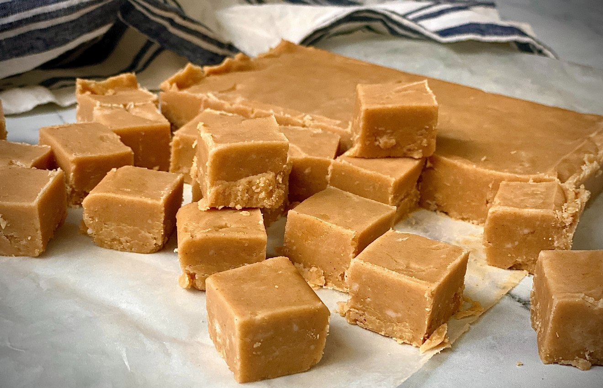

Easiest Peanut Butter Fudge

Description
This is the best recipe for creamy and delicious peanut butter fudge I have ever used. It is great for sharing at work.
Ingredients
- 1/2 cup butter
- 1 (16 ounce) package brown sugar
- 1/2 cup milk
- 3/4 cup peanut butter
- 1 teaspoon vanilla extract
- 3 1/2 cups confectioners' sugar
Steps
- Melt butter in a medium saucepan over medium heat.
- Stir in brown sugar and milk. Bring to a boil and boil for 2 minutes, stirring frequently.
- Remove from heat. Stir in peanut butter and vanilla.
- Pour over confectioners' sugar in a large mixing bowl.
- Beat until smooth; pour into an 8x8 inch dish.
- Chill until firm and cut into squares.